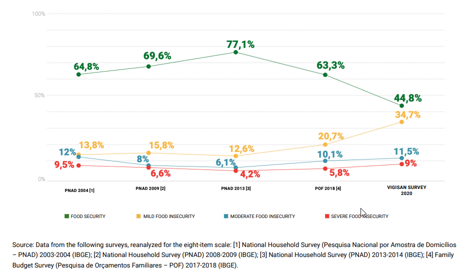

About us
The Food Donation Brazil website has been created to bring an opportunity for people
outside Brazil, to understand the situation of the population in this country after the effect of
the pandemic. We would like to help people in Brazil with support from anyone in any place in the
world. With hands like a volunteer, financial support or food if it is possible. We present some
NGOs that support thousands of families and could be supporting more with your help.
God bless you and thank you for your support.
How to help?
Basicamente, você pode ajudar de 3 maneiras:
- Volunteer: You can help with your work, providing a support like a job.
- Money: Provide a financial support, directly for a specific NGO or specific supporting that is going on.
- Food: Send what they need, it can help several families not starving
Who to help?
Food insecurity is when someone does not have full and permanent access to food.
Today, in the midst
of the pandemic, half the population of Brazil is facing some level of food insecurity: mild,
moderate or severe. Severe food insecurity affects 9% of the population – in other words, 19 million
Brazilians are facing hunger.
The results of the present study reveal an even steeper deterioration in the past two years,
aggravated by the pandemic, with levels of moderate and severe food insecurity back up to levels
documented in 2004. This reverse in progress after 2013, and exacerbated in recent years, reveals
how the Covid-19 pandemic has added to the existing economic and political crises to significantly
erode the right of the Brazilian population to an adequate and healthy diet.
